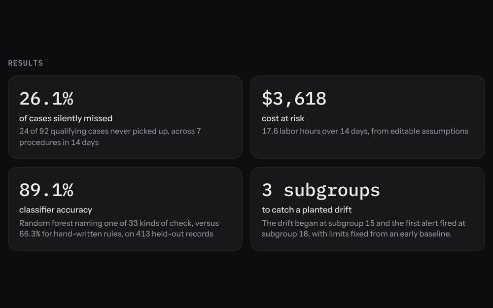
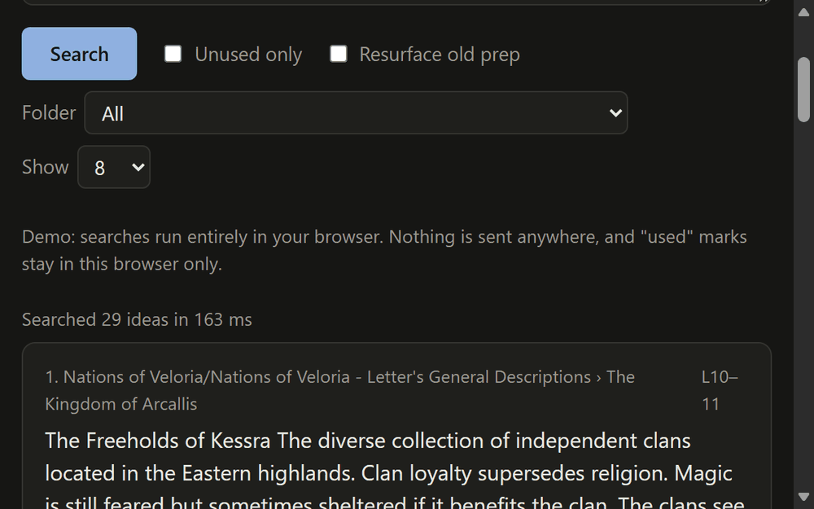
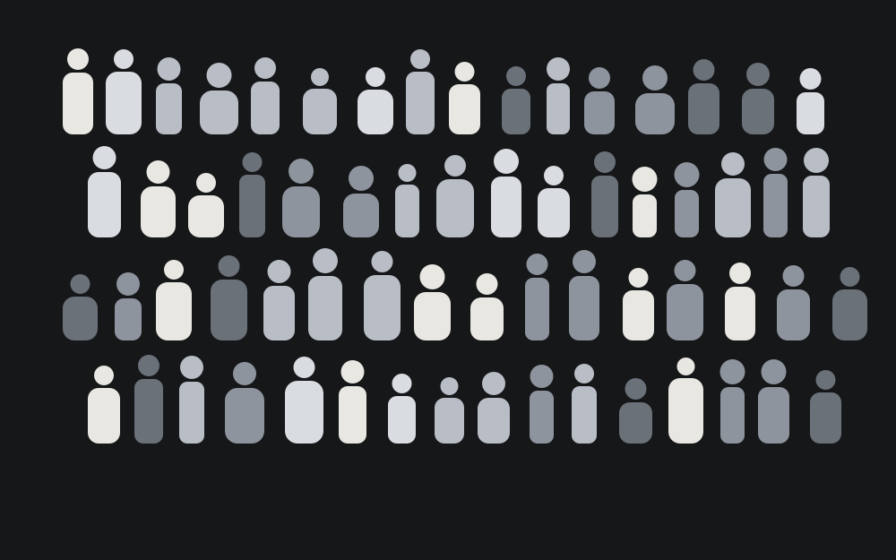

Automation Program Management Intern
Taiwan Semiconductor Manufacturing Company, Summer 2026
Audited 130 automated procedures across more than 2,200 tools and shipped a key performance indicator for the whole platform.
I'm studying industrial engineering at Georgia Tech, graduating in May 2028, and this past summer I interned at TSMC in Arizona.
I'm looking for Summer 2027 internships in technical program management, operations, product management, supply chain, or data and analytics.
Runs, scanned
The runs that started line up in a tidy grid. The ones that never ran sit out of line, and finding them was my project at TSMC. About 5 percent here; the data is made up.
Automation Program Management InternPhoenix, Arizona, May to August 2026
I interned at TSMC's Arizona fab on the team that runs automated procedures. I proposed an audit of the runs that never started, scoped it, and led it across 130 procedures and more than 2,200 tools.
The platform reports how many of the runs it started were successful, and it had no record of the ones that never started. The audit found silent failures equal to 4 to 6 percent of the runs that did start.
The procedures had been written from inconsistent templates, so I turned them into detection specifications and found owners for them across several departments and with teams in Taiwan, where I worked in Mandarin. I wrote SQL and Python against more than 1,000,000 daily log entries and set up on-call alerts for critical misses.
I quantified about 600 hours a month of manual work and an estimated six figures in scrap, with wafers worth about $25,000 each, by prioritizing the fixes that protect wafer flow. I also built a reusable audit template organized by candidate type.
I shipped a key performance indicator across the whole platform, time saved per run, that measures what each automation is actually worth, along with four Power BI dashboards that are now in active use. The indicator was approved after I presented it to the head of manufacturing for Fab 21, and it has been implemented.
What came out of it
OpsAudit, my own version of the audit, rebuilt on synthetic data so I can show it.

Live demoAn audit that rebuilds what automated procedures should have caught. On synthetic data it found 26.1 percent of cases missed, and when I tried the same ideas on a public semiconductor dataset they did not hold up, which I wrote up.

In progressFinds the notes you already wrote that fit what is happening at the table. It only searches your own writing and never generates anything.

ReleasedA Mount & Blade II: Bannerlord mod that gives every soldier a build and a face that stay the same, and adds women to the ranks.
Taiwan Semiconductor Manufacturing Company, Summer 2026
Audited 130 automated procedures across more than 2,200 tools and shipped a key performance indicator for the whole platform.
Microsoft Student Research, September 2026 to present
Research on AI-powered incident management and on-call tooling for a Microsoft product team. Competitive teardowns, market sizing and discovery, including a teardown of one competitor across six evaluation tracks with sourced evidence that separates verified capability from vendor marketing.
Product @ GT, Georgia Tech, August 2026 to present
B.S. in Industrial Engineering, concentration in Analytics and Data Science, graduating May 2028. Stamps President's Scholar.
Coursework includes Database Systems, Engineering Optimization, Simulation Analysis and Design, Quality Improvement Methods, and Regression and Forecasting.
Presenting
I gave a research pitch as a Germination Project fellow on mental illness treatment and healthcare disparities among veterans and people experiencing homelessness. Our team had spent most of the project in the data. For the final presentation I took the ending and added a few short recollections from our interviews, along with my own personal connection to the topic. I kept them controlled and let them sit next to the numbers. The audience included Penn Medicine staff and local government leaders, and we won the pitch. The numbers made the case and the stories made it matter to the room, which is how I try to approach any presentation: who is listening, what they need to hear, and how to make it land for them.
Running the table
I run a Dungeons & Dragons campaign, and it is where Backroom came from. In one session a supposedly level 3 wizard started flying and I forgot about the trap I had set in the alleyway. I scraped together a sudden fight, and while the players were celebrating I rewrote my next session so that it took place right after.
Two languages
I grew up in Hangzhou and moved to New Mexico in third grade, where I started over in English. I learned it from library books and an online fan community, and I'm fluent in both languages now. At TSMC that meant I could confirm what a procedure was meant to do directly with teams in Taiwan.
Fun fact
I've been in short films and scholastic commercials since I was around twelve.